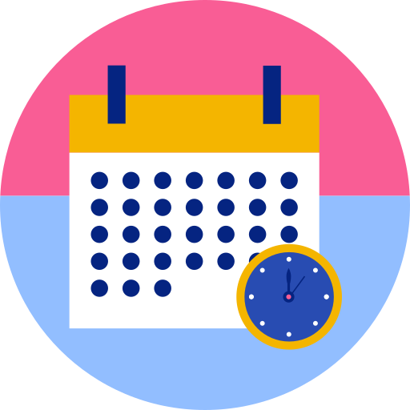

Key Features
User
Create, list, and retrieve users
Patient
Create, list, and retrieve patients

Appointment
Manage appointments and schedules
Report
Generate reports on appointments and patients
Dental clinic management system
Create, list, and retrieve users
Create, list, and retrieve patients
Manage appointments and schedules
Generate reports on appointments and patients
As a future doctor in dental medicine, I've seen firsthand the challenges that small dental clinics face when managing appointments and patient data. That's why I created ThootTrack - a dental clinic management system that helps streamline operations and improve patient care.
This project was inspired by my own experiences and those of my colleagues who still use traditional methods or excel to manage their clinics. I'm excited to share ThootTrack as a portfolio project for Holberton School.
Connect with me:
View the project repository on GitHub.